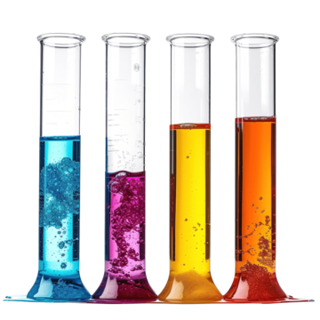
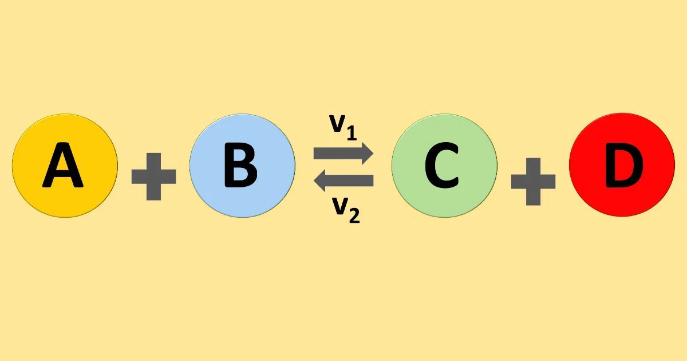
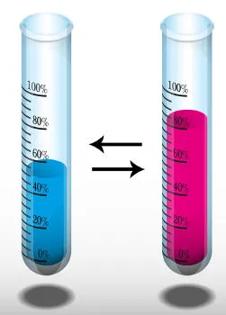
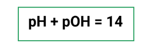

Playlist de Química


Parte por milhão (ppm)
Partes por Milhão (PPM) é uma unidade de concentração usada para medir quantidades mínimas de soluto. Ela indica quantas "partes" de soluto existem em 1 milhão de "partes" da solução. A equivalência mais prática e comum é que ppm é o mesmo que miligrama de soluto por litro de solução (mg/L).

Diluição das soluções
Diluição é o processo de adicionar solvente (geralmente água) a uma solução para reduzir sua concentração. O princípio-chave é que a quantidade de soluto permanece constante antes e depois do processo, sendo expressa pela fórmula C1V1 = C2V2.

Misturas
Misturas são a união física de duas ou mais substâncias que mantêm suas propriedades. São classificadas como homogêneas (uma única fase, ex: água e açúcar) ou heterogêneas (duas ou mais fases visíveis, ex: água e óleo).
Equilíbrio Químico
Equilíbrio Químico é o estado dinâmico onde as velocidades da reação direta e inversa se tornam iguais, mantendo as concentrações de reagentes e produtos constantes.
O Princípio de Le Chatelier estabelece que, quando um sistema em equilíbrio químico sofre uma perturbação externa (mudança de concentração, pressão ou temperatura), o sistema irá se deslocar no sentido que minimiza o efeito dessa perturbação e estabelece um novo equilíbrio.
Os fatores que deslocam o equilíbrio químico são: Concentração, Temperatura e Pressão (em gases) . O sistema sempre se ajusta para anular a perturbação (ex: adiciona reagente $\rightarrow$ desloca para produtos) e somente a temperatura altera a Constante de Equilíbrio (K)
O Produto Iônico da Água (Kw) governa a autoionização da H2O (Kw} = 10^{-14} a 25ºc) . O pH mede a acidez pela concentração de {H}^+ e o pOH a basicidade, sendo que sempre (pH + pOH = 14}$.
